Ball & Beam Control System
A real prototype of a classic unstable control problem. A servo tilts a beam so a rolling ball stays at the position we ask for, with a closed-loop PID controller running on an Arduino Uno.
A system that wants to fall over
The ball and beam behaves like a double integrator, so it is unstable when left alone: the ball keeps drifting away from where we want it. The plant is modelled as P(s) = 5.532 / s², which means only feedback can hold the ball in place. The goal was to take the whole project from idea to a working, tested machine, following the VDI 2206 methodology for mechatronic design.
- RequirementsDefine what the system must do.
- Mechanical designCAD model and FEA checks.
- ElectronicsArduino, servo, sensor and power stage.
- SoftwarePID control in MATLAB, Simulink and Arduino.
- IntegrationHardware and software working together.
- ValidationSystem identification and testing.
Built and tested on real hardware
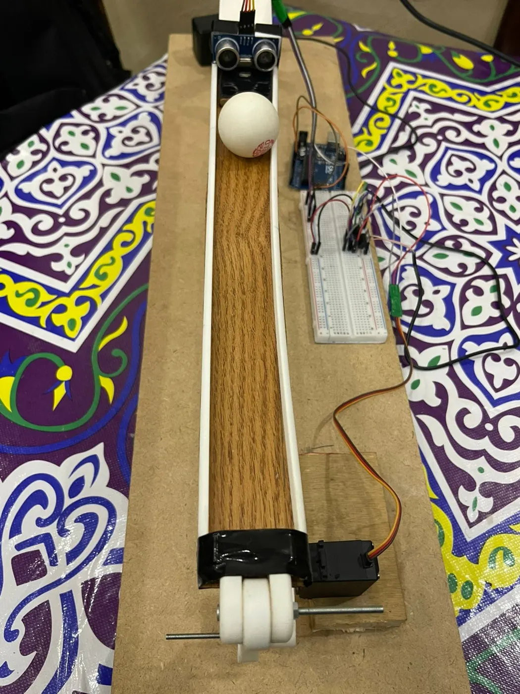
Hardware
Control loop
CAD and finite element analysis
The full assembly was modelled and checked before anything was built. The main parts are the beam assembly, the linkage mechanism, the servo mount, the sensor holder and the structural base. FEA was used to look at displacement and stress on the connecting link and on the beam.
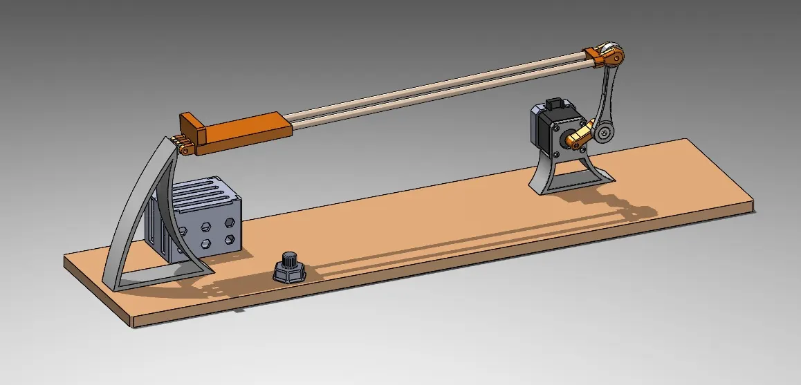
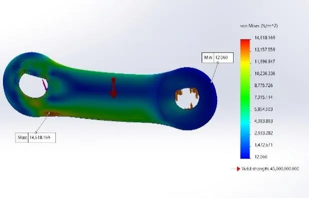
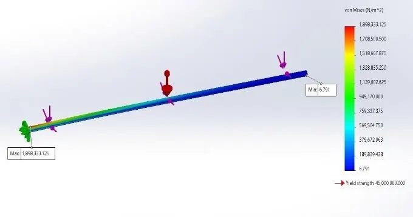
Circuit
An Arduino Uno reads the ultrasonic sensor and drives the MG995 servo. A voltage regulation stage and an external supply keep the servo from disturbing the logic side.
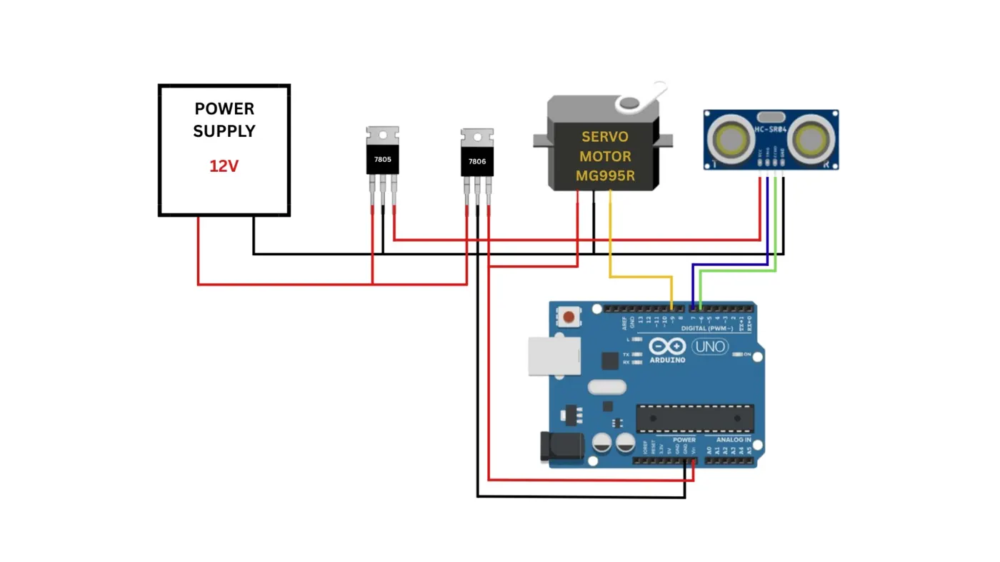
From unstable to stable
The open-loop response confirms the ball diverges. Root locus analysis then guided the choice of controller, and the PID gains below gave a good balance between fast response, small overshoot and zero steady-state error.
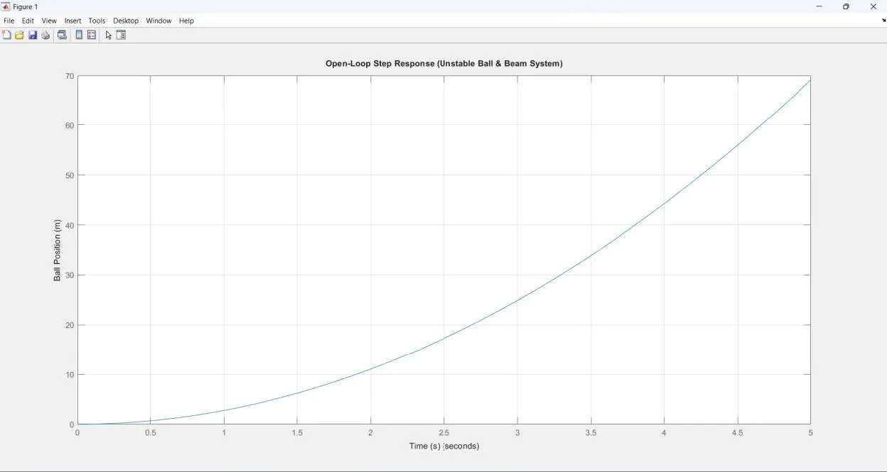
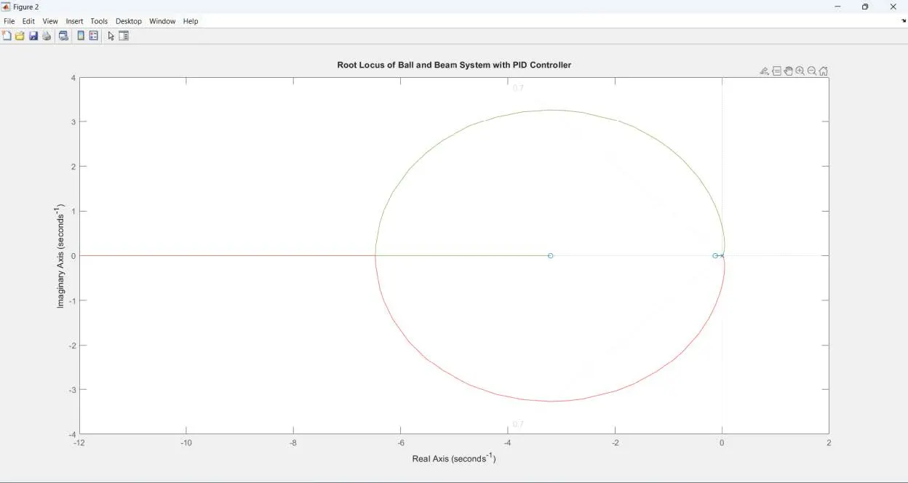
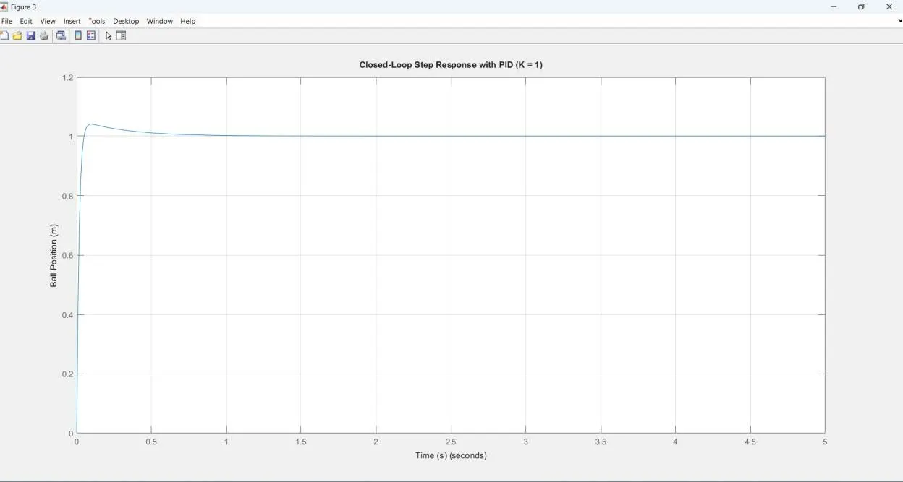
What each gain does
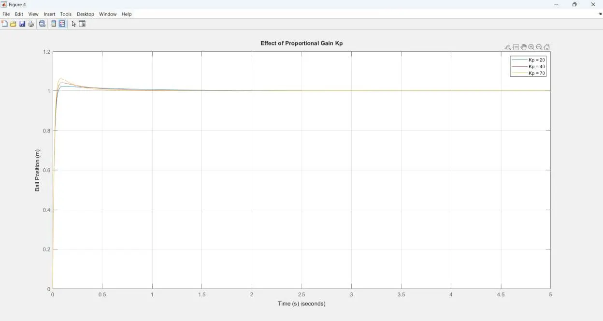
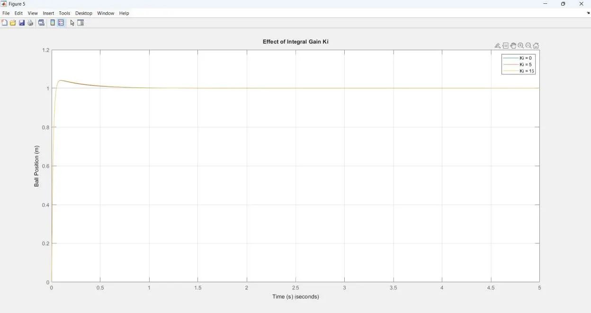
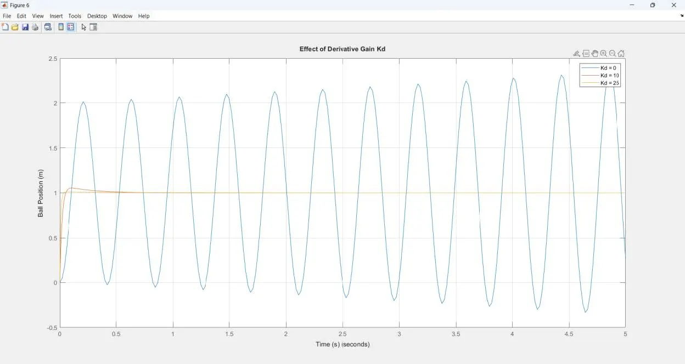
Simulink, then the real machine
The controller was first tested in MATLAB and Simulink, then implemented on the Arduino and connected to MATLAB over serial communication. That gave real-time data acquisition, live plots of the response, closed-loop monitoring and performance analysis.
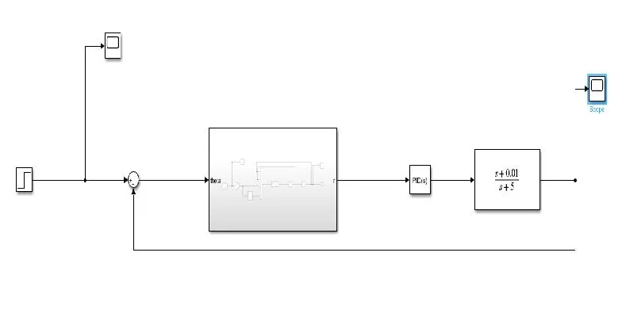
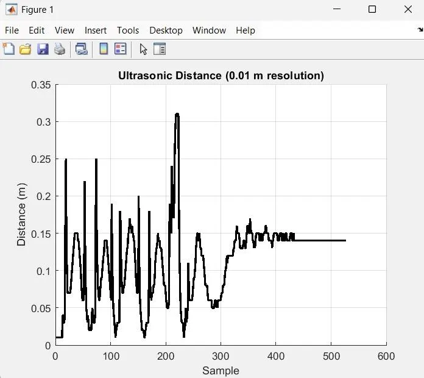
Theory versus the real system
Data collected from the prototype was processed with the MATLAB System Identification Toolbox, giving two practical models. Comparing them with the theoretical model was one of the most important parts of the project.
Identified model 1
Identified model 2
| Model | Overshoot (%) | Settling time (s) | Steady-state error |
|---|---|---|---|
| Theoretical model | 5.43 | 0.364 | 0 |
| Practical model 1 | 0.00 | 1005.137 | 0 |
| Practical model 2 | 0.77 | 0.000 | 0 |
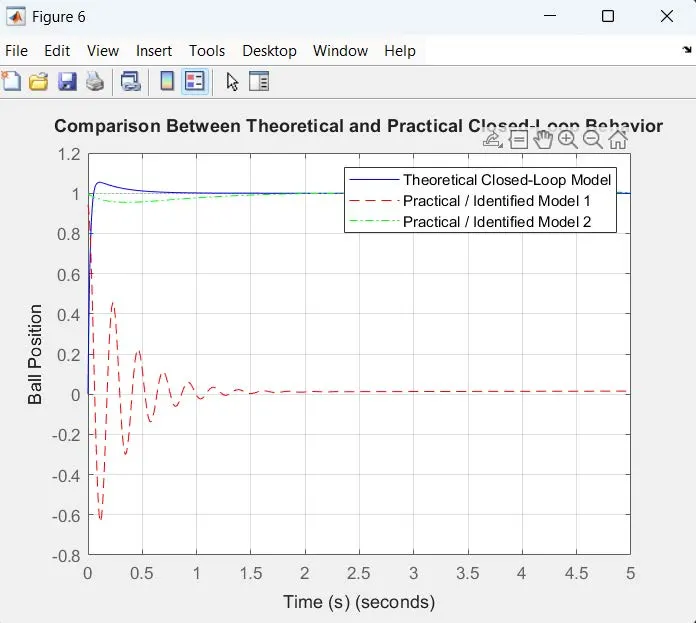
Team and supervision
A team project by Mahmoud Mohamed Shamekh, Omar Mahmoud Metwally, Youssef Mostafa Ayad and Ebrahim Magdy Ebrahim, supervised by Dr. Amro Shafik and Eng. Mohamed Ashraf.